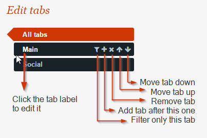
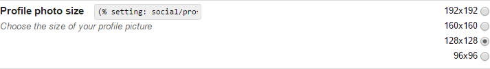
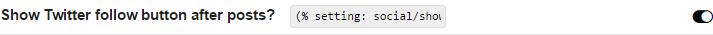
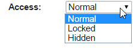

User Guide
Advised use
It is important (or at least advised), to give each setting a unique label, as the lookup (used for outputting settings) is generated as a slug of the label. If there are conflicting names, the setting ID will be appended to the lookup. It is also important to note that if you change the setting label or tab, the lookup will change too, so you will need to adapt its outputting code in the editor/templates/components where you used it. Therefore it is advised not to change the setting's tab/ label after putting it in use.
Switching between modes
The Site Settings plugin allows you to switch modes between Manage and Edit. Manage mode only allows changing the value of visible, non-locked inputs, and is meant for the webmaster/ website manager; in Edit mode, (primarily) for the developer, one can create and modify settings. Simply click the button to toggle the mode.
Editing tabs
I guess editing tabs is pretty self-explanatory (see image to the right). Click the tab label to edit it, and click the icons to complete any of the following actions, from left to right:
1. Filter view only settings in this tab
2. Add a new tab
3. Remove this tab
4. Move this tab up
5. Move this tab down
{% include components.html block="note" type="info" text="If a tab contains settings and is removed, the settings in the tab or moved to the first tab." %}
Editing settings
 To view setting details for all settings, toggle the Open/ Close All button in the top-right nav. Here you can also toggle feedback on/off. Similar to editing tabs, every setting has a small toolbar to the left which allows any of the following actions, from left to right:
To view setting details for all settings, toggle the Open/ Close All button in the top-right nav. Here you can also toggle feedback on/off. Similar to editing tabs, every setting has a small toolbar to the left which allows any of the following actions, from left to right:
1. Show/ Hide setting details
2. Add a new setting
3. Remove this setting
4. Move this setting up
5. Move this setting down
{% include components.html block="note" type="info" text="Some actions (like moving up or down) can only be completed in the All tabs view." %}
Setting input type
You can choose between 8 different types of input for settings. Below is a preview of what they look like in Manage mode.
Text
Textarea
Checkbox
Radio
Select
Fancy checkbox
Fancy radio
Switch
Setting access

Normal makes the input visible and editable to all in Manage mode.
Locked makes the input visible to all in Manage mode, but not editable.
Hidden makes the input invisible to all in Manage mode.
{% include components.html block="note" type="info" text="The value of inputs which are set to Locked or Hidden can be changed only in Edit mode." %}
For Locked or Hidden inputs, a Value text field will appear in Edit mode. It is important to note that this was originally only intended for text and textarea fields. Any other type of setting should work, but might not on some occasions. If you choose another type of setting, you should write a valid value for it, eg: checkbox & switch settings expect a value of TRUE or FALSE, and radio & select inputs expect an option index number.
Outputting settings
To get a setting in a page (in the WYSIWYG editor), simply type (% setting: tab/setting %).
To get a setting in themes and components, type <?php get_setting('tab/setting') ?>.
To process the return value before outputting it, type <?php return_setting('tab/setting') ?>. The easiest way to get this code, is to copy to select and copy paste the code field next to the input (the WYSIWYG code is visible in Manage mode, the PHP code in Edit mode.) Beneath is a listing of the return values for each type of input (the 'fancy' versions as well as switch simply make use of font icons instead of standard inputs):
| Input types | Return value |
text |
Returns the text content from the field |
textarea |
Returns the text content from the field |
checkbox |
Returns TRUE (checked) or FALSE (unchecked) |
radio |
Returns the selected option's text value. |
select |
Returns the selected option's text value. |
switch |
Returns TRUE (on) or FALSE (off) |
fancy checkbox |
Returns TRUE (checked) or FALSE (unchecked) |
fancy radio |
Returns the selected option's text value. |
Restricting editing permission
By default both the Manage and Edit modes are enabled. If inputs are to be locked or hidden, the only available mode should be Manage. In version 0.1 you can toggle this mode by finding the ko_site_settings.php file in the plugins directory, look for the $ko_site_settings_defs array, and set NO_EDITING to TRUE. In future releases user permissions shall be included as an option.